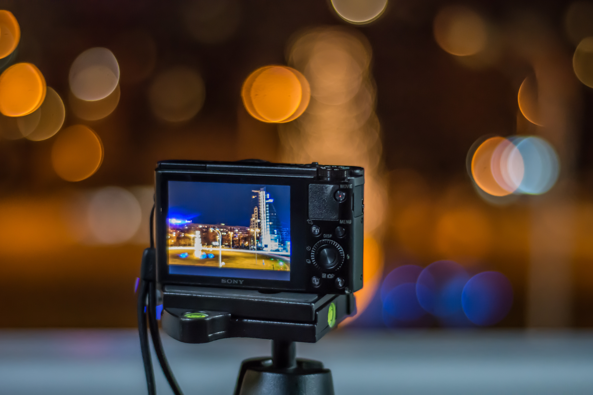
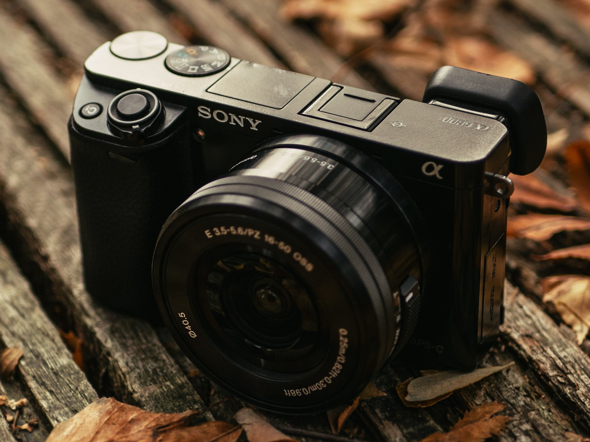
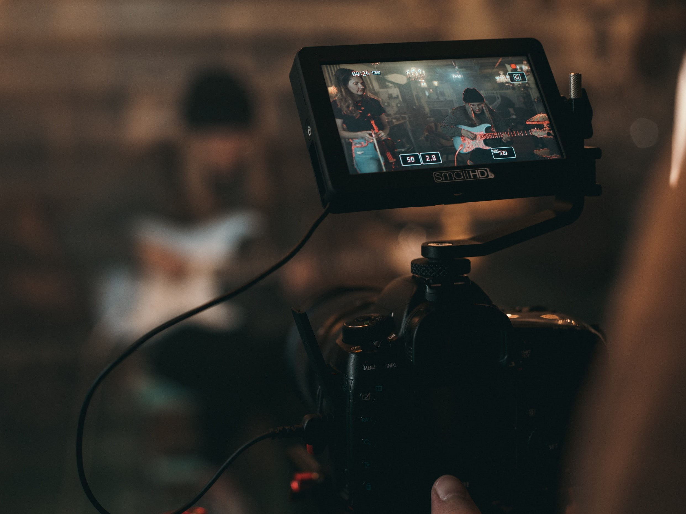
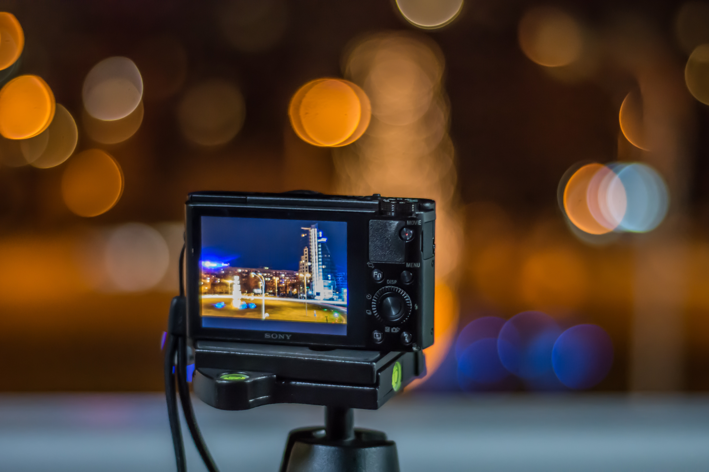
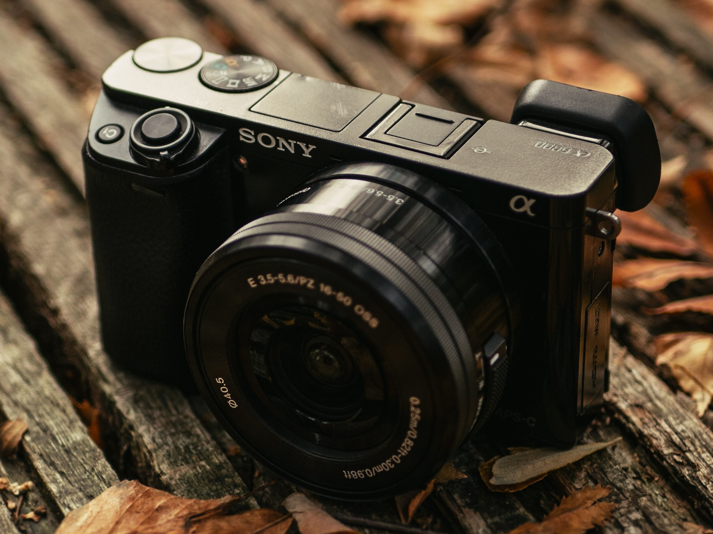
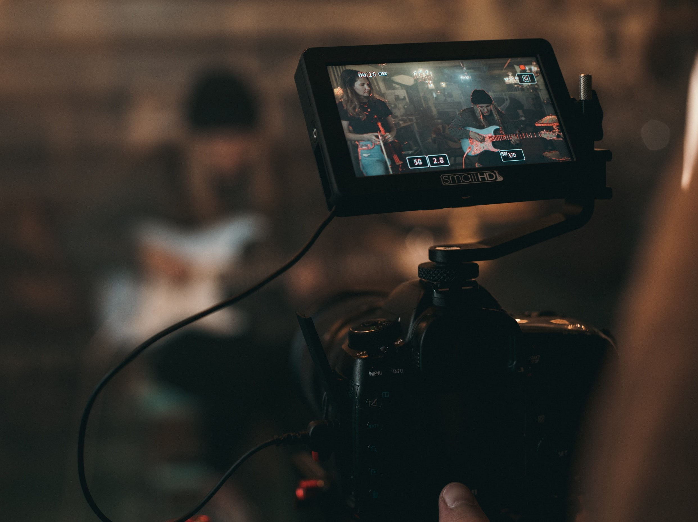
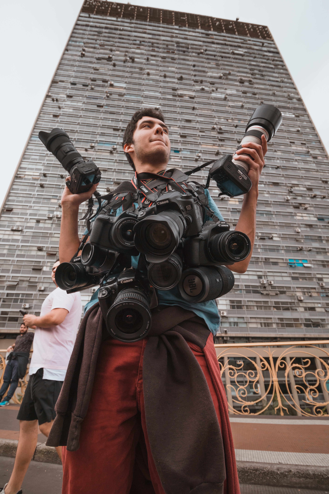
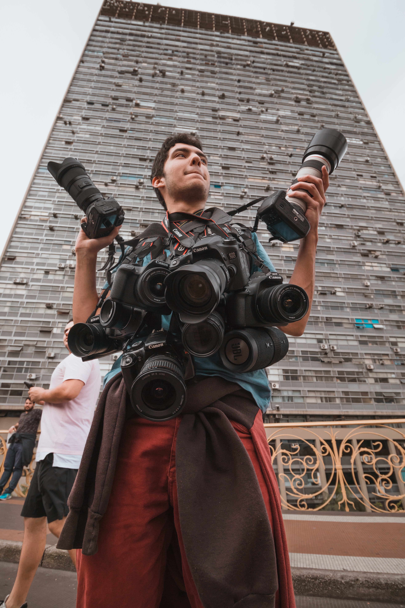
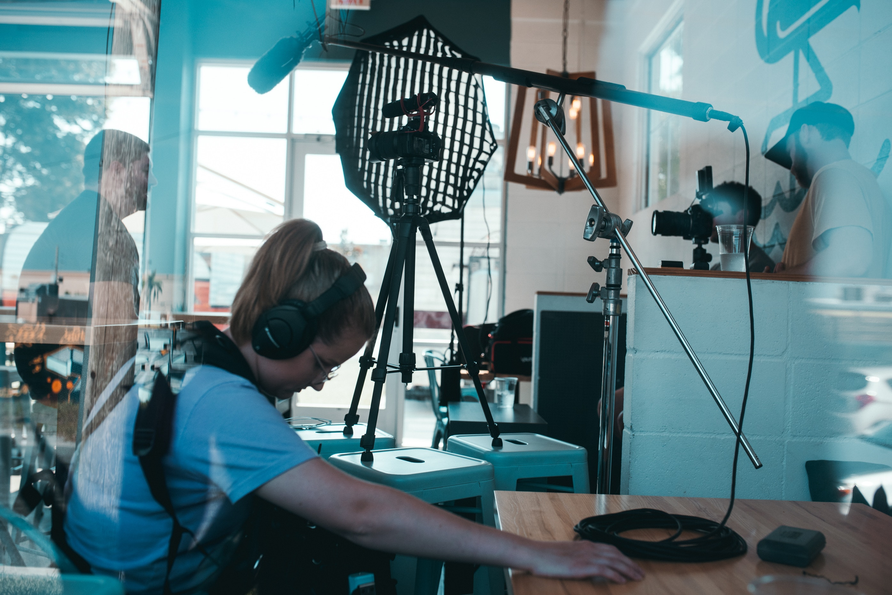
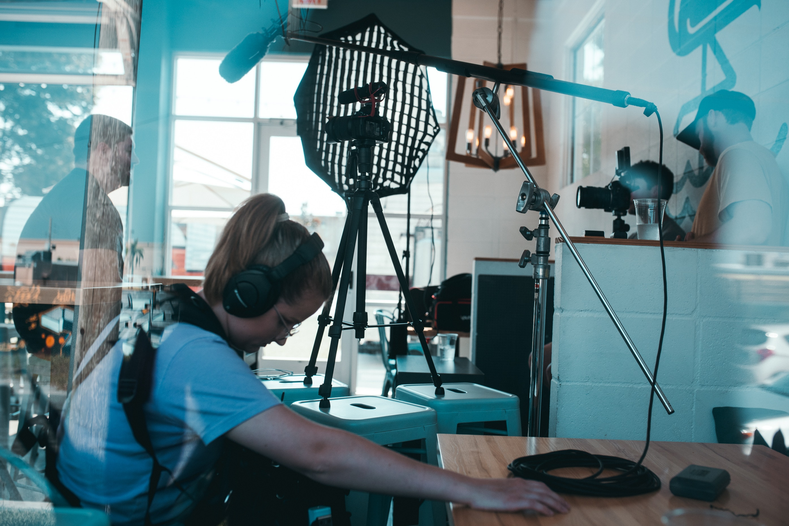

Para obtener una fotografía se requiere de algún material que sea capaz de reaccionar a la luz (fotosensible), en el caso de la fotografía digital este material fotosensible es un chip de silicón, bien puede tratarse de un CCD (Charged Coupled Device) o bien de un CMOS (Complementary metal oxide semiconductor) éstos últimos son los más utilizados comercialmente ya que presentan un menor costo de producción.
En la actualidad el formato más popular de fotografia analogica es la película de 35mm, que es utilizada en cámaras réflex (desde antes de la década pasada, se usaba también en cámaras compactas). Otros formatos de gran popularidad son los formato medio (120, 220), Polaroid (reconocidas por su capacidad de revelarse instantáneamente) y los grandes formatos (4×5”, 5×7” y 8×10”). Estos últimos utilizados generalmente para el campo de la publicidad.
 

El objetivo es la parte de la cámara que dirige los rayos de luz hacia el sensor.Consta de una o varias lentes de forma convexa que proyecta los rayos de luz que lo atraviesan en un punto llamado foco. Cuando enfocamos con la cámara en realidad lo que hacemos es hacer coincidir el foco con el sensor de la cámara para obtener una imagen nítida.Con él ajustamos la distancia focal (zoom) y el enfoque. Con una distancia focal de 50 mm se consigue una visión lo más parecida al ojo humano.
 
Las etapas más hermosas de tu vida pasan muy rápido, no pierdas la oportunidad de tener el mejor recuerdo.Ponemos a tu alcance toda la infraestructura, profesionalismo y experiencia que nos caracteriza para crear:Momentos únicos que duran para siempre! Si buscas el mejor estudio de fotografía de tu embarazo, recién nacido, bebé o familia, estás en el lugar correcto.